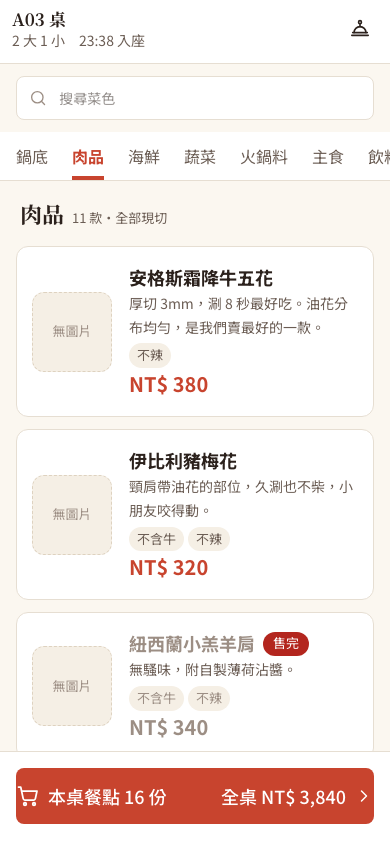
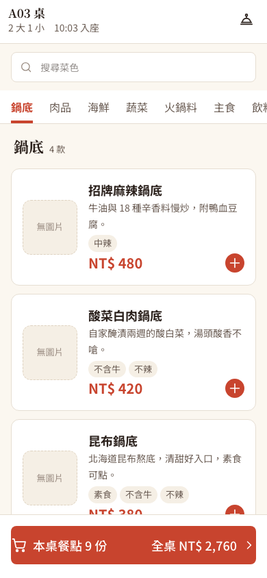
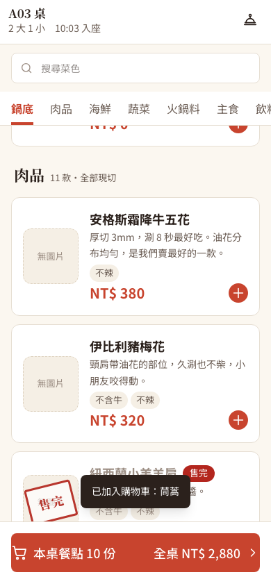
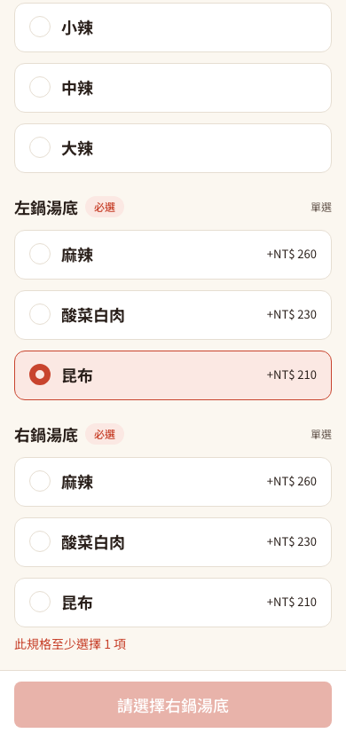
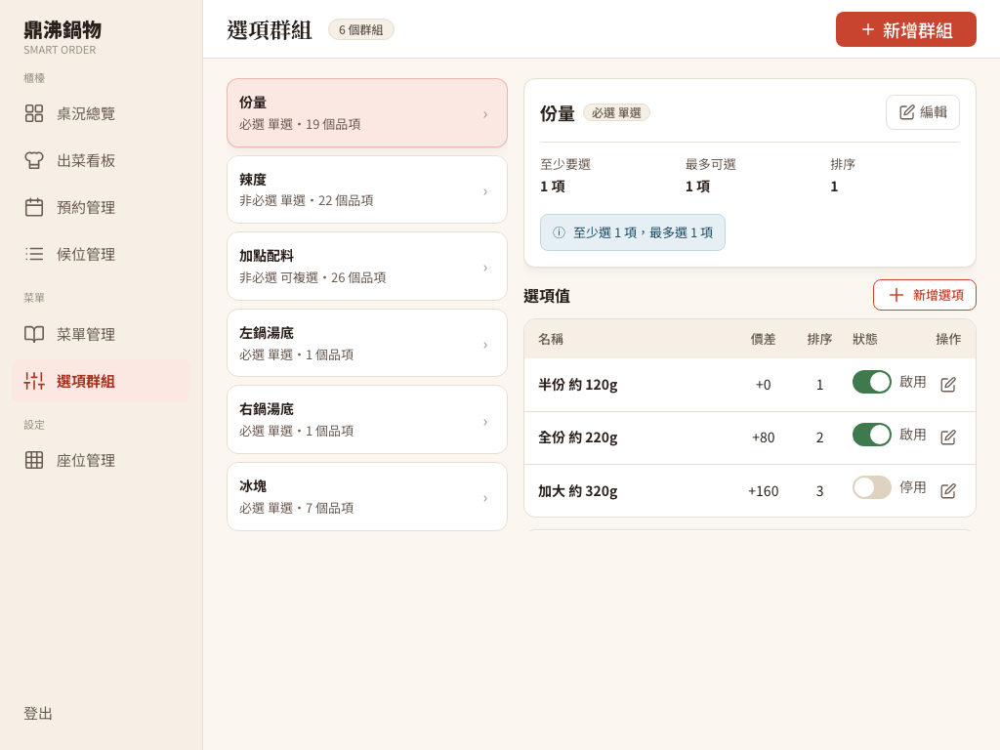

在 390px 手機寬度逐條對照規格
- 單選不能直接換（錯誤）：鴛鴦鍋的「左鍋湯底」只能選一個。選了麻辣之後，同一組的昆布就被停用，要先取消才能換。原因是「選滿上限就停用其他選項」這條規則，連上限是 1 的單選也套用了。
- 少了
[+]快速加入：規格要每列有[+]，沒有必選選項的菜按一下就進購物車，少一次點擊；目前每道菜都要先進詳情頁。 - 售完樣式不完整：規格是照片灰階、價格劃線、名稱旁標籤加照片上的「售完」印章、整列不能點。原本只有標籤和不能點，印章因為絕對定位跑版被拿掉過。
- 分類頁籤是「切換」不是「捲動」：規格寫「捲動時自動高亮目前分類」，代表全部菜色在同一條清單；原本點頁籤只顯示那一類。
- S-06 選項群組清單少一個數字：規格要左側每個群組標「掛在幾個品項」，原本只有右側詳情才看得到。
- 效能：顧客菜單 API（Application Programming Interface，應用程式介面）每個品項都另外查一次庫存，用 MySQL 查詢紀錄實測，載入一次菜單共 125 次 SELECT，其中 123 次在查庫存。


[+]、售完只有灰字。右上角的服務鈴是另一位組員加的功能。規格把服務鈴列為「已移出本次範圍」，這次照「以實作者的內容為主」保留，由團隊決定要不要留。
五個畫面修正＋一個查詢合併
- 單選：只有複選群組才「選滿就停用」；單選點另一個直接換掉。非必選的單選（例如辣度）再點一次可以取消，不然選了就回不到「不選」。
[+]：後端在每道菜多回一個hasRequiredOptions（有沒有必選群組，一次查好全部）。沒有必選的直接加 1 份並短暫顯示打勾；有必選的進詳情頁。觸控範圍 44×44，連點只送一次。- 售完：沒圖片也畫固定 80×80 的照片框，印章畫在框裡（框有
overflow-hidden，不會蓋到文字），價格加劃線，售完不顯示[+]。 - 捲動清單：一次抓全部品項，依分類分段。點頁籤平滑捲到該段；手動捲動時，「標題已經捲過頂欄下緣」的最後一段就是目前分類。頂欄高度用 ResizeObserver 量，搜尋改在手機端跨全部分類篩選。即時更新（售完、上下架、分類停用）不再清空清單，捲動位置不會跳回頂端。
- S-06：群組清單用一次 GROUP BY 查出每個群組的品項數，顯示「必選 單選・19 個品項」。
- 查詢合併：原本拿到品項後，再逐筆查庫存（這叫 N+1：1 次查清單，再 N 次查明細）。改成查品項時用
LEFT JOIN FETCH把庫存一起帶回來，在記憶體裡判斷售完。
修正前後都實測
- 查詢次數：同一個菜單 API，125 次 → 3 次 SELECT（隔離的 MySQL 5.7，用 general log 計數）。
- 瀏覽器 19 項全過：分段順序、點頁籤捲動與高亮、手動捲動高亮、
[+]加入後購物車 16 → 17 份、點照片也進詳情、必選品項進詳情、售完樣式、搜尋只顯示有結果的分類、店長在後台改售完，手機不用重新整理就變灰、單選直接換、辣度可取消、320／390／480px 都沒有橫向溢出、S-06 顯示數量。 - 回歸：HTTP 10 套（菜單管理、出菜看板、購物車、點餐交易、櫃檯代客點餐、結帳等）、舊的瀏覽器測試（個人購物車 23、櫃檯代客點餐 25、結帳 27）都通過。菜單 API 改成回傳 DTO，舊欄位名稱一個不少，只多了兩個欄位。
- 獨立審查：沒有 P1；P2「點可售品項的照片沒反應」（照片框蓋在整列按鈕上面，點擊被擋住）已在
e1fa197修正，並補上「清空搜尋後馬上點頁籤會捲錯位置」。 - HTTP 與查詢次數紀錄、瀏覽器紀錄（含修正前觀察）。


[+]。

[+] 後出現「已加入購物車」。



這篇用到的東西
- React 19 狀態管理、Tailwind CSS 4 的
sticky與overflow-hidden、ResizeObserver、requestAnimationFrame節流捲動事件、prefers-reduced-motion（使用者關掉動畫時改成瞬間跳轉）。 - Spring Data JPA 的
LEFT JOIN FETCH解決 N+1；DTO（Data Transfer Object，資料傳輸物件）讓 API 回傳格式不再綁死資料表。 - 設計模式：捲動監聽（scroll spy）；批次查詢取代逐筆查詢；向下相容的 API 變更（只加欄位、不改舊欄位名稱）。
- 學到什麼：先拿規格逐條對照畫面，再量測，例如查詢次數要用資料庫紀錄數出來，不要用猜的。
新手名詞
- C-04／C-05／S-06
- UI 規格的畫面編號：菜單主頁、品項詳情、選項群組管理。
- 單選（radio）／複選（checkbox）
- 一組只能選一個／可以選多個。單選換選項時，舊的應該自動取消。
- sticky（黏住）
- 捲動時固定在畫面頂端的 CSS 定位方式。
- scroll spy（捲動監聽）
- 依目前捲到哪裡，自動高亮對應的頁籤或目錄。
- N+1 查詢
- 先查 1 次清單，再為每一筆各查 1 次，資料一多就很慢。
- LEFT JOIN FETCH
- JPA 的寫法：查主資料時，把關聯資料一起帶回來，不再逐筆另外查。
- DTO（Data Transfer Object，資料傳輸物件）
- 專門用來裝 API 回傳內容的物件，跟資料表的結構分開。
- SHA／Git commit
- SHA 是 Secure Hash Algorithm（安全雜湊演算法）；Git 用它替每個版本產生識別碼。